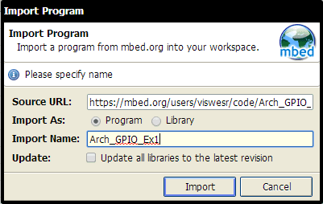
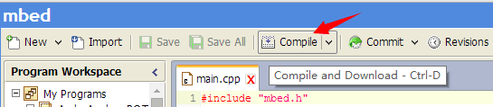
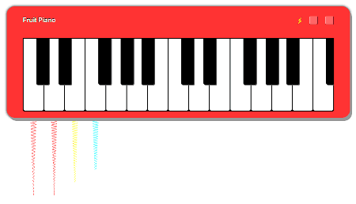
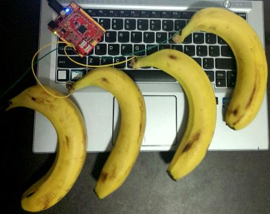

Grove - Starter Kit for mbed
About mbed and Grove
mbed is an open source development platform for rapid prototyping with microcontrollers. It provides free software libraries, hardware designs and development tools to build projects very easily and fast.
Grove is a modular electronics platform for quick prototyping that does not involve soldering or bread boarding.
About this kit
This kit is designed for you to get started with mbed as soon as possible. It contains many plug-n-play Grove modules to start exploring the mbed world. One goal is to have fun and build confidence with hardware and software in the journey.
Get Started
All the things to get started are:
Hello, world
- Click this link to signup or login mbed, then you will get the mbed online compiler.
- Import the program and open main.cpp, you will see the code.

- On mbed online IDE, click "Compile" of the top toolbar (or use CTRL + D) to compile the code and the binary file - Arch_GPIO_Ex1_LPC11U24.bin.

- Connect the Arch board to the computer and long press the button, a USB drive named CRP DISABLD will pop up.
- Delete firmware.bin and copy Arch_GPIO_Ex1_LPC11U24.bin to the USB drive.
- Quick press the button, the program will be running, an LED will be blinking.
#include "mbed.h"
/* Configure a GPIO pin as output for controlling a LED. 'led' is user assigned name and
'LED1' is a internal name given to a port pin P1_8 in this Arch platform. */
DigitalOut led(LED1);
int main()
{
while(1) {
led = 1; // Switch ON the LED.
wait(0.5); // Wait for 0.5 Seconds.
led = 0; // Switch OFF the LED.
wait(0.5); // Wait for 0.5 Seconds.
}
}The above program uses DigitalOut class and wait() function of mbed C/C++ SDK. LED1 is an pseudonym of I/O pin P1_8 and
is labelled D1 in the Arch board. The state of LED1 is changed by writing either 0 or 1 to led. The wait() function produces
a delay in seconds. The state of the led is continuous toggled every 0.5 seconds inside the endless while() loop.
More details of DigitalOut can be find in DigitalOut page of mbed handbook. Similarly the wait() function is documented in wait page.
Fruit Piano
A piano built with a basket of fruit, a microcontroller and a computer.
The idea is from Makey Makey, but uses different hardware and software. An mbed enabled microcontroller with USB is used.


Hardware
- An Arch board
- A basket of fruit
- A computer with AC power
- Some wires
Software
- Click this link to import the program to mbed online compiler.
- Compile the code and download the binary file - Fruit_Piano_LPC11U24.bin.
- Connect the Arch board to the computer and long press the button, a USB drive named CRP DISABLD will pop up.
- Delete firmware.bin and copy Arch_GPIO_Ex1_LPC11U24.bin to the USB drive.
- Quick press the button to run the program
- Wire some apples or bananas to A0 - A5 (P0_11 - P0_14, P0_16, P0_22) pins of the Arch board
- Open Fruit Piano and play
More, Step By Step
- Digital Input - Button: use a button to control an LED
- Analog Input - Potentiometer: use a potentiometer to control the blinking of an LED
- Temperature Sensing: use a analog temperature sensor to make a thermometer
- PWM Ouput - Buzzer: use a buzzer to play a melody
- Display: make a digital clock
- A thermometer
- Infrared keyboard
- Colorful light
- Temperature controls color
Resources
Copyright (c) 2008-2016 Seeed Development Limited (
www.seeedstudio.com /
www.seeed.cc)
This static html page was created from http://www.seeedstudio.com/wiki